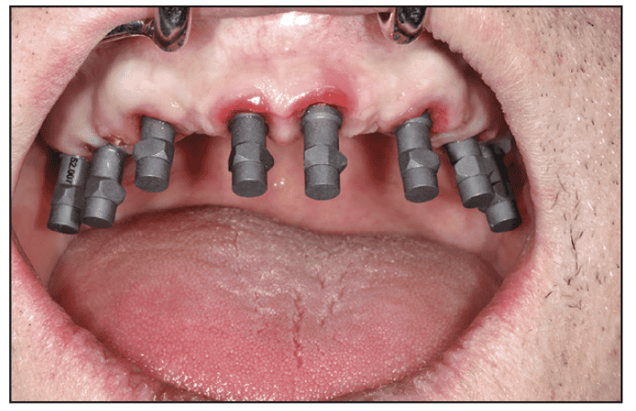

نسخه استخراجشده؛ ترجمه یا تأیید علمی انجام نشده است. وضعیت: captured
اسکنبادیها را روی ایمپلنتها بستهای و اسکنر در دست توست. تصور رایج این است که اسکن داخل دهانی فرایندی ساده است و مهارت تخصصی نمیخواهد. ولی دقت این اسکن را چه چیزی تعیین میکند؟

اسکن داخل دهانی هم مثل قالبگیری سنتی بر اصول مشخصی بنا شده است و رعایت درست این اصول برای رسیدن به دقت قابل قبول ضروری است؛ وگرنه خطا روی هم انباشته میشود (Accumulated distortion).
اسکن باید پیوسته و یکنواخت باشد. اسکن یکنواخت و سریعتر فریمهای اضافی را کم میکند؛ فریم کمتر یعنی همپوشانی سادهتر و Distortion تجمعی کمتر. مکثهای طولانی یا حرکات نامنظم فریم بیشتری میسازند، مطابقت تصاویر را دشوار میکنند و دقت نهایی را پایین میآورند.
اسکنبادیهای فلزی پایداری ابعادی بیشتری دارند و دقت بالاتری میدهند. اسکنبادیهای PEEK ممکن است با سفت کردن پیچ یا استریلیزاسیون تغییر شکل بدهند و استفادهی مکرر از آنها دقت ثبت ایمپلنت را کم میکند؛ پس استفاده از آنها باید محدود و کنترلشده باشد.
بزاق یا خون الگوی نوری اسکن را مختل میکند، نقاط مرجع را ضعیف میکند و تطبیق تصاویر را دچار خطا میکند. نتیجه، کاهش قابل توجه دقت اسکن و احتمال بیشتر Distortion در برداشت دیجیتال است؛ پس ناحیهی اسکن باید خشک باشد.
نوع سؤال: ساخت کلمه · 2 خانه
حروف منبع: کامل · قوس